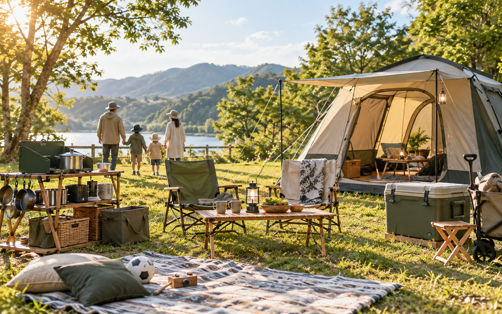

ファミリーテント
最初の主役。泊まりなら広さ、デイキャンプなら設営の早さを優先します。
- 家族人数より少し広め
- 設営しやすい構造
- 雨の日の耐水性

FAMILY CAMP / PR
アフィリエイト広告を含む場合があります
週末に外で遊べて、もしもの停電や避難時にも役立つもの。テント、チェア、明かり、保冷、電源の5つから、家族キャンプの入口をまとめました。
キャンプ用品は、家族で遊ぶ用途と災害時に役立つ用途の両方を考えて紹介しています。掲載画像はイメージで、実際の商品写真ではありません。掲載リンクにはA8.netのアフィリエイト広告を含みます。
START HERE
最初の主役。泊まりなら広さ、デイキャンプなら設営の早さを優先します。
子どもが座りやすく、食事やカード遊びがしやすい高さを選びます。
キャンプの夜だけでなく、停電時の明かりにも使いやすい用品です。
飲み物や食材を入れるので、容量と車への積みやすさを先に見ます。
スマホ充電、ライト、扇風機などに。防災ページでも紹介しているJackeryは、キャンプ用途でも確認したい候補です。
いきなり全部買わず、家族に合うか試したいときはレンタルも候補です。
SHOPPING GUIDE
いきなり泊まり用を全部そろえず、日帰りで必要なものから始めると失敗しにくいです。
テントやテーブルは大きいので、車に積めるか、自宅で置けるかを先に確認します。
ランタン、クーラーボックス、ポータブル電源は、停電時や避難時にも役立ちます。
BougeRVとオーライトは提携申請済みです。承認後、クーラーボックス・アウトドア家電やライトの候補として追加します。